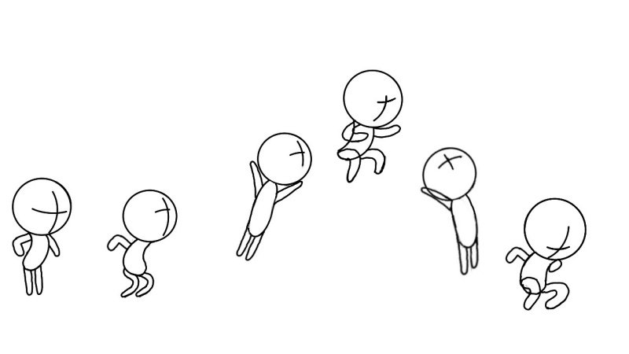

One of the Twelve Principles of Animation
Link to Wikepedia of the Twelve Principles
The principle we will focus on today is the 2nd principle,
Anticipation

.circle{ height: 50px; width: 50px; border-radius: 50%; background color: red; }